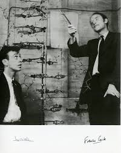

Cientistas importante

James Watson e Francis Crick foram pesquisadores importantes no entendimento sobre a molécula de DNA. Há muito tempo já se estudava a hereditariedade do material genético e do que era constituído, até que revelaram um modelo que explicava qual era a estrutura do DNA: a dupla hélice.